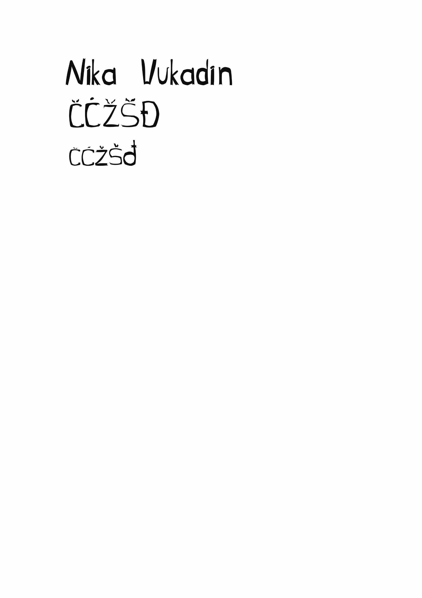
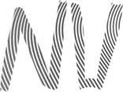
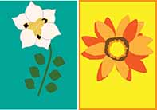
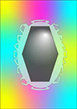
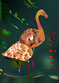
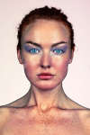
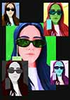
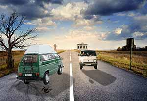
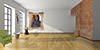

Vježbe
Ovdje se nalaze slike i zadatci s vježbi i projektnih zadataka koje sam radila tokom semestra.
Vježba 1
Font
Vježba 2
Korištenje maske. .
Vježba 3
Multipliciranje objekata nacrtanima sa alatom Pen.
Tehnikama kopiranja više sam puta postavila oblike, te ih obojala bojama kreiranim u novoj Color grupi.

Vježba 4

Projektni zadatak 1
Iskoristila sam vlastiti font za riječ "priroda". Koristila sam zadane elemente i tehnike (Bezierove krivulje, gradijenti, maskiranje, transformacije, mesh) prema zadanoj slici.
Vježba 5
Retuširanje slika.
Vježba 6
Koloriranje slike.
Vježba 7
Kombinirala sam više fotografija izrezivanjem.
Projektni zadatak 2
Kreiranje slike u programu GIMP koristeći retuširanje, fotomontažu i koloriranje.
Vježba 8
Ova vježba se bavi osnovama obrade video materijala i uvođenjem multimedije u video projekt.